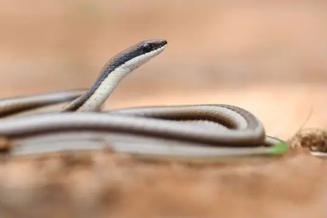
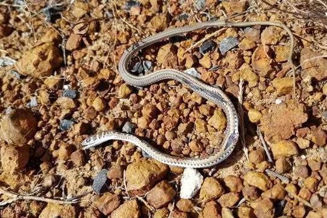
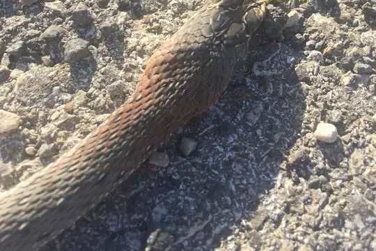
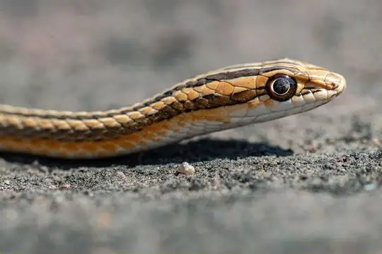
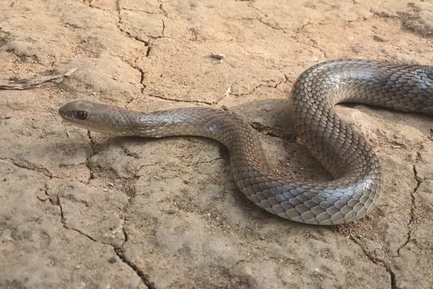
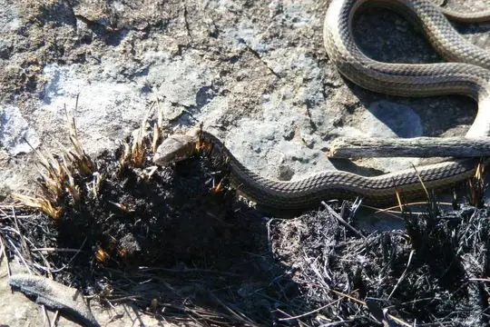
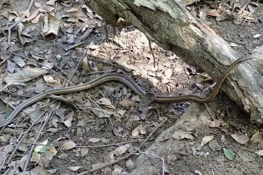

Psammophiidae
The family Psammophiidae (sand snakes and allies) has 58 species in SnakeList (40 venomous and 18 non-venomous), in 8 genera.
- 58species
- 40venomous
- 18non-venomous
- 8genera
About the family
The sand snakes and their allies. They were formerly treated as a subfamily of the Lamprophiidae.[1]
Species
Showing 58 species
- No photo yetAfrican Horn Sand SnakePsammophis cornusafricae
 Beaked SkaapstekerKladirostratus acutus
Beaked SkaapstekerKladirostratus acutus
Beautiful Sand SnakePsammophis pulcher
Cape Sand SnakePsammophis leightoni Dwarf Beaked SnakeDipsina multimaculata
Dwarf Beaked SnakeDipsina multimaculata Dwarf Sand SnakePsammophis angolensis
Dwarf Sand SnakePsammophis angolensis
Eastern Montpellier SnakeMalpolon insignitus Eastern Stripe-bellied Sand SnakePsammophis orientalis
Eastern Stripe-bellied Sand SnakePsammophis orientalis Elegant Sand RacerPsammophis elegans
Elegant Sand RacerPsammophis elegans- No photo yetFork-marked Sand SnakePsammophis trinasalis
 Forskal Sand SnakePsammophis schokari
Forskal Sand SnakePsammophis schokari Grey-bellied Grass SnakePsammophylax variabilis
Grey-bellied Grass SnakePsammophylax variabilis Huíla SkaapstekerPsammophylax ocellatus
Huíla SkaapstekerPsammophylax ocellatus Indo-Chinese Sand SnakePsammophis indochinensis
Indo-Chinese Sand SnakePsammophis indochinensis Jalla's Sand SnakePsammophis jallae
Jalla's Sand SnakePsammophis jallae Kalahari Sand SnakePsammophis afroccidentalis
Kalahari Sand SnakePsammophis afroccidentalis Kenyan striped skaapstekerPsammophylax multisquamis
Kenyan striped skaapstekerPsammophylax multisquamis
Leith's Sand SnakePsammophis leithii Leopard Sand SnakePsammophis leopardinus
Leopard Sand SnakePsammophis leopardinus Lined Olympic SnakePsammophis lineatus
Lined Olympic SnakePsammophis lineatus- No photo yetLink-marked Sand RacerPsammophis ansorgii
 Link-marked Sand SnakePsammophis biseriatus
Link-marked Sand SnakePsammophis biseriatus
Long Sand RacerPsammophis longifrons Moila SnakeMalpolon moilensis
Moila SnakeMalpolon moilensis
Montane Grass SnakePsammophis crucifer Montpellier snakeMalpolon monspessulanus
Montpellier snakeMalpolon monspessulanus Mopane SnakeHemirhagerrhis nototaenia
Mopane SnakeHemirhagerrhis nototaenia- No photo yetNamib Sand SnakePsammophis namibensis
 Northern Bark SnakeHemirhagerrhis hildebrandtii
Northern Bark SnakeHemirhagerrhis hildebrandtii
Northern Pencil SnakeMimophis occultus Olive Grass RacerPsammophis phillipsii
Olive Grass RacerPsammophis phillipsii Olive Whip SnakePsammophis mossambicus
Olive Whip SnakePsammophis mossambicus Ornate Olympic SnakePsammophis praeornatus
Ornate Olympic SnakePsammophis praeornatus Pencil SnakeMimophis mahfalensis
Pencil SnakeMimophis mahfalensis Red Beaked SnakeRhamphiophis rubropunctatus
Red Beaked SnakeRhamphiophis rubropunctatus Rhombic SkaapstekerPsammophylax rhombeatus
Rhombic SkaapstekerPsammophylax rhombeatus Rufous Beaked SnakeRhamphiophis rostratus
Rufous Beaked SnakeRhamphiophis rostratus Rukwa Sand RacerPsammophis rukwae
Rukwa Sand RacerPsammophis rukwae Saharan Sand SnakePsammophis aegyptius
Saharan Sand SnakePsammophis aegyptius Sand Snake (condanarus)Psammophis condanarus
Sand Snake (condanarus)Psammophis condanarus Short-snouted Grass SnakePsammophis brevirostris
Short-snouted Grass SnakePsammophis brevirostris Speckled Sand RacerPsammophis punctulatus
Speckled Sand RacerPsammophis punctulatus Steppe Ribbon RacerPsammophis lineolatus
Steppe Ribbon RacerPsammophis lineolatus Stripe-bellied Sand SnakePsammophis subtaeniatus
Stripe-bellied Sand SnakePsammophis subtaeniatus Striped Bark SnakeHemirhagerrhis kelleri
Striped Bark SnakeHemirhagerrhis kelleri Striped Sand SnakePsammophis sibilans
Striped Sand SnakePsammophis sibilans Striped SkaapstekerPsammophylax tritaeniatus
Striped SkaapstekerPsammophylax tritaeniatus Sudanese Sand SnakePsammophis sudanensis
Sudanese Sand SnakePsammophis sudanensis Tanganyika Sand SnakePsammophis tanganicus
Tanganyika Sand SnakePsammophis tanganicus- No photo yetTanzanian Grass SnakePsammophylax kellyi
- No photo yetTogo SkaapstekerKladirostratus togoensis
- No photo yetTurpan Sand SnakePsammophis turpanensis
 Western Bark SnakeHemirhagerrhis viperina
Western Bark SnakeHemirhagerrhis viperina Western Beaked SnakeRhamphiophis oxyrhynchus
Western Beaked SnakeRhamphiophis oxyrhynchus Western Sand SnakePsammophis trigrammus
Western Sand SnakePsammophis trigrammus Whip SnakePsammophis notostictus
Whip SnakePsammophis notostictus Zambian Whip SnakePsammophis zambiensis
Zambian Whip SnakePsammophis zambiensis- Known from fossilsMalpolon mlynarskii
No snakes in Psammophiidae match.
About the family Psammophiidae
- Genera: Psammophis 36, Psammophylax 6, Hemirhagerrhis 4, Malpolon 4, Rhamphiophis 3, Kladirostratus 2, Mimophis 2, Dipsina 1.